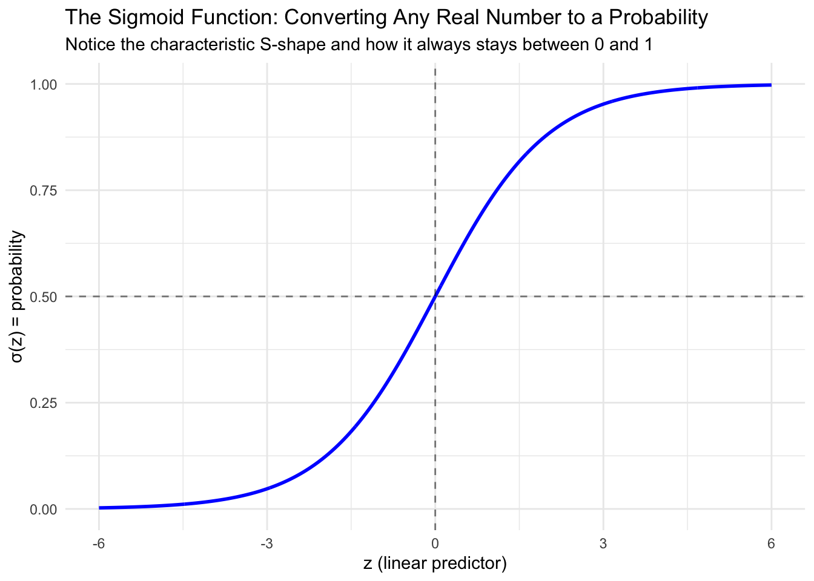
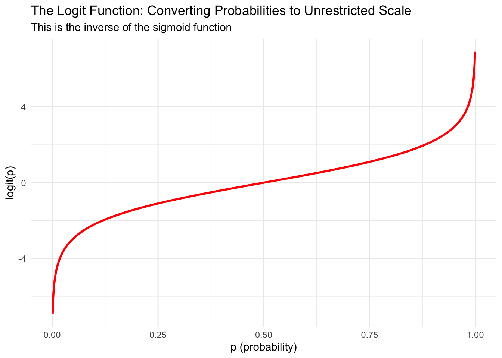

Module 5.2
The Logistic Regression Model
Prework
- Install the
peacesciencerpackage (install.packages("peacesciencer")) - Have a look at the
peacesciencerdocumentation to familiarize yourself with its contents and basic functions
Overview
Building on our understanding of why we need logistic regression for binary outcomes, this module dives into the mathematical foundations and practical implementation of logistic regression. We’ll explore the sigmoid function as the key mathematical tool that transforms linear predictions into valid probabilities, understand the logit function as the link between our linear model and probabilities, and implement logistic regression using real conflict data.
By the end of this module, you’ll understand how the sigmoid function ensures probabilities stay between 0 and 1, know the relationship between the logit and sigmoid functions, be able to set up and run logistic regression models in R, and interpret basic model output (with deeper interpretation coming in our next module).
The Sigmoid Function: The Key to Valid Probabilities
Remember our fundamental problem from Module 5.1: linear regression can predict impossible probabilities like -0.3 or 1.7 when we apply it to binary outcomes. We need a mathematical function that can take any real number (from negative infinity to positive infinity) and transform it into a valid probability between 0 and 1.
Enter the sigmoid function (also called the logistic function). The sigmoid function is defined as:
\[\sigma(z) = \frac{1}{1 + e^{-z}}\]
where \(z\) can be any real number, and \(\sigma(z)\) will always be between 0 and 1.
Let’s visualize what this function looks like:
The sigmoid function has several important properties that make it perfect for our needs. Most importantly, it always produces outputs between 0 and 1, no matter what value we put in for \(z\). The function has a characteristic S-shaped curve that rises slowly at first, then more rapidly in the middle, then slowly again as it approaches its limits. It’s symmetric around 0.5, meaning that when \(z = 0\), we get \(\sigma(z) = 0.5\). Unlike a step function that would create abrupt jumps, the sigmoid provides smooth probability transitions as our predictors change.
This is exactly what we need for binary classification! The sigmoid function takes our linear combination of predictors (which can be any value) and converts it to a probability.
The Logit Function: The Other Side of the Equation
While the sigmoid function shows us how to convert linear predictors to probabilities, we actually need to set up our model the other way around. Remember that in regression, we want to model something as a linear function of our predictors. But we can’t model probabilities directly as linear functions because probabilities are constrained between 0 and 1, while linear functions can produce any value from negative infinity to positive infinity.
This is where we need to “go the other direction” - we need a function that takes probabilities and transforms them onto an unrestricted scale where we can model them linearly. The logit function does exactly this transformation:
\[\text{logit}(p) = \log\left(\frac{p}{1-p}\right)\]
The logit function takes a probability (between 0 and 1) and transforms it to any real number (between negative and positive infinity). Let’s visualize this:

The term \(\frac{p}{1-p}\) in the logit function is called the odds. When \(p = 0.5\) (equal chance of success and failure), the odds equal 1, and \(\log(1) = 0\). When \(p > 0.5\), the odds are greater than 1, and the logit is positive. When \(p < 0.5\), the odds are less than 1, and the logit is negative.
The Complete Logistic Regression Model
Now we can put together the complete picture of how logistic regression works. Remember from Module 5.1 that all GLMs have three components:
- Distribution: \(y_i \sim \text{Bernoulli}(p_i)\) (each observation is a Bernoulli trial)
- Linear predictor: \(\eta_i = \beta_0+ \beta_1 x_{1,i} + \cdots + \beta_k x_{k,i}\) (familiar linear combination)
- Link function: \(\text{logit}(p_i) = \eta_i\) (connects the linear predictor to the probability)
Putting it all together:
\[\text{logit}(p_i) = \eta_i = \beta_0+ \beta_1 x_{1,i} + \cdots + \beta_k x_{k,i}\]
To get back to probabilities, we apply the sigmoid function:
\[p_i = \sigma(\eta_i) = \frac{1}{1 + e^{-(\beta_0+ \beta_1 x_{1,i} + \cdots + \beta_k x_{k,i})}}\]
Or an equivalent form that is often used in practice:
\[p_i = \frac{\exp(\beta_0+\beta_1 x_{1,i} + \cdots + \beta_k x_{k,i})}{1+\exp(\beta_0+\beta_1 x_{1,i} + \cdots + \beta_k x_{k,i})}\]
The key insight is that we model the logit of the probability as a linear function of our predictors, then use the sigmoid function to convert back to probabilities that make sense. The logit gets us from constrained probabilities to an unrestricted scale where we can do linear modeling, and the sigmoid gets us back from that unrestricted scale to meaningful probabilities.
Worked Example: Logistic Regression with Conflict Onset Data
Let’s implement logistic regression using our conflict onset example. We can use data from the peacesciencer package. The create_stateyears() function will help us set up a dataset where each row represents one country in one year, and our binary outcome variable will indicate whether a civil war began in that country in that year. Then we add different sets of predictors using peacesciencer “add” functions like add_ucdp_acd(), add_democracy(), and others to create a rich dataset for our analysis.
library(peacesciencer)
library(dplyr)
# Create the conflict dataset
conflict_df <- create_stateyears(system = 'gw') |>
filter(year %in% c(1946:1999)) |>
add_ucdp_acd(type=c("intrastate"), only_wars = FALSE) |>
add_democracy() |>
add_creg_fractionalization() |>
add_sdp_gdp() |>
add_rugged_terrain()
# Take a look at our data
glimpse(conflict_df)Rows: 7,036
Columns: 20
$ gwcode <dbl> 2, 2, 2, 2, 2, 2, 2, 2, 2, 2, 2, 2, 2, 2, 2, 2, 2, 2, 2…
$ statename <chr> "United States of America", "United States of America",…
$ year <dbl> 1946, 1947, 1948, 1949, 1950, 1951, 1952, 1953, 1954, 1…
$ ucdpongoing <dbl> 0, 0, 0, 0, 0, 0, 0, 0, 0, 0, 0, 0, 0, 0, 0, 0, 0, 0, 0…
$ ucdponset <dbl> 0, 0, 0, 0, 0, 0, 0, 0, 0, 0, 0, 0, 0, 0, 0, 0, 0, 0, 0…
$ maxintensity <dbl> NA, NA, NA, NA, NA, NA, NA, NA, NA, NA, NA, NA, NA, NA,…
$ conflict_ids <chr> NA, NA, NA, NA, NA, NA, NA, NA, NA, NA, NA, NA, NA, NA,…
$ v2x_polyarchy <dbl> 0.605, 0.587, 0.599, 0.599, 0.587, 0.602, 0.601, 0.594,…
$ polity2 <dbl> 10, 10, 10, 10, 10, 10, 10, 10, 10, 10, 10, 10, 10, 10,…
$ xm_qudsest <dbl> 1.259180, 1.259180, 1.252190, 1.252190, 1.270106, 1.259…
$ ethfrac <dbl> 0.2226323, 0.2248701, 0.2271561, 0.2294918, 0.2318781, …
$ ethpol <dbl> 0.4152487, 0.4186156, 0.4220368, 0.4255134, 0.4290458, …
$ relfrac <dbl> 0.4980802, 0.5009111, 0.5037278, 0.5065309, 0.5093204, …
$ relpol <dbl> 0.7769888, 0.7770017, 0.7770303, 0.7770729, 0.7771274, …
$ wbgdp2011est <dbl> 28.539, 28.519, 28.545, 28.534, 28.572, 28.635, 28.669,…
$ wbpopest <dbl> 18.744, 18.756, 18.781, 18.804, 18.821, 18.832, 18.848,…
$ sdpest <dbl> 28.478, 28.456, 28.483, 28.469, 28.510, 28.576, 28.611,…
$ wbgdppc2011est <dbl> 9.794, 9.762, 9.764, 9.730, 9.752, 9.803, 9.821, 9.857,…
$ rugged <dbl> 1.073, 1.073, 1.073, 1.073, 1.073, 1.073, 1.073, 1.073,…
$ newlmtnest <dbl> 3.214868, 3.214868, 3.214868, 3.214868, 3.214868, 3.214…# Check our binary outcome variable
table(conflict_df$ucdponset, useNA = "always")
0 1 <NA>
6894 142 0
Understanding the Code
In the last line, we use the table() function to summarize our binary outcome variable ucdponset, which indicates whether a civil war began in that country in that year. The useNA = "always" argument ensures we also see how many observations have missing values. this helps us understand the distribution of our outcome variable, how many observations we have in total and whether we have any missing data that we need to be concerned with before running our regressions.
Take a moment to examine this output. Consider how many observations we have and what our binary outcome variable is called. Notice the distribution of 1s versus 0s in the outcome variable. Most importantly, think about what each row represents in terms of Bernoulli trials.
Remember, each row represents one country in one year, and we’re asking: “Did a civil war begin in this country in this year?” Each observation is a separate Bernoulli trial with its own probability of “success” (conflict onset) based on that country’s characteristics in that year.
Running a Logistic Regression in R
The good news is that implementing logistic regression in R is very similar to linear regression. We just need to make a few changes to tell R that we are working with a binary outcome. Instead of using
lm(continuous_outcome ~ predictor1 + predictor2, data = mydata)
as we did for linear regression, we now use
glm(binary_outcome ~ predictor1 + predictor2, data = mydata, family = "binomial")
for logistic regression.
The key changes are switching from lm() to glm() and adding the family = "binomial" argument to specify we’re working with binary data. This family specification tells R to use the logit link function automatically, handling all the mathematical transformations we discussed.
Let’s start with a simple bivariate example, examining how GDP per capita relates to conflict onset:
# Fit a logistic regression model
conflict_model <- glm(ucdponset ~ wbgdppc2011est,
data = conflict_df,
family = "binomial")
# Look at the summary
summary(conflict_model)
Call:
glm(formula = ucdponset ~ wbgdppc2011est, family = "binomial",
data = conflict_df)
Coefficients:
Estimate Std. Error z value Pr(>|z|)
(Intercept) -1.16241 0.42606 -2.728 0.00637 **
wbgdppc2011est -0.33082 0.05261 -6.289 3.2e-10 ***
---
Signif. codes: 0 '***' 0.001 '**' 0.01 '*' 0.05 '.' 0.1 ' ' 1
(Dispersion parameter for binomial family taken to be 1)
Null deviance: 1389.6 on 7035 degrees of freedom
Residual deviance: 1358.4 on 7034 degrees of freedom
AIC: 1362.4
Number of Fisher Scoring iterations: 7The output looks similar to linear regression, but the interpretation is different because we’re modeling the log-odds (logit) rather than the outcome directly.
Understanding the Model Output
When you look at the summary output from a logistic regression, remember that the coefficients are on the log-odds scale. A coefficient of 0.5 means a one-unit increase in that predictor increases the log-odds by 0.5. The intercept represents the log-odds of the outcome when all predictors equal zero. Standard errors and p-values are interpreted similarly to linear regression for hypothesis testing, but you won’t see an R-squared value since we don’t use that measure of fit with logistic regression.
The coefficients tell us about direction and significance, but interpreting the magnitude on the log-odds scale can be challenging. This is why we typically transform these results into more intuitive measures when making practical interpretations.
Summary and Looking Ahead
In this module, we’ve explored the mathematical foundations that make logistic regression work. The sigmoid function provides the crucial capability to transform any real number into a valid probability between 0 and 1, while the logit function allows us to transform probabilities into an unrestricted scale that we can model linearly. Together, these functions enable the complete GLM framework that connects our linear predictors to binary outcomes through the logit link function. Implementing this approach in R requires only small changes from linear regression, using glm() with family = "binomial" instead of our familiar lm() function.
In our next module, we’ll learn how to interpret these log-odds coefficients in more meaningful ways through odds ratios and predicted probabilities. We will discover how to answer questions like “How much does democracy change the probability of conflict onset?” and “What’s the predicted probability of conflict for a specific country profile?” Thanfully, the mathematical foundation that we laid today will make those interpretations much clearer and more intuitive.